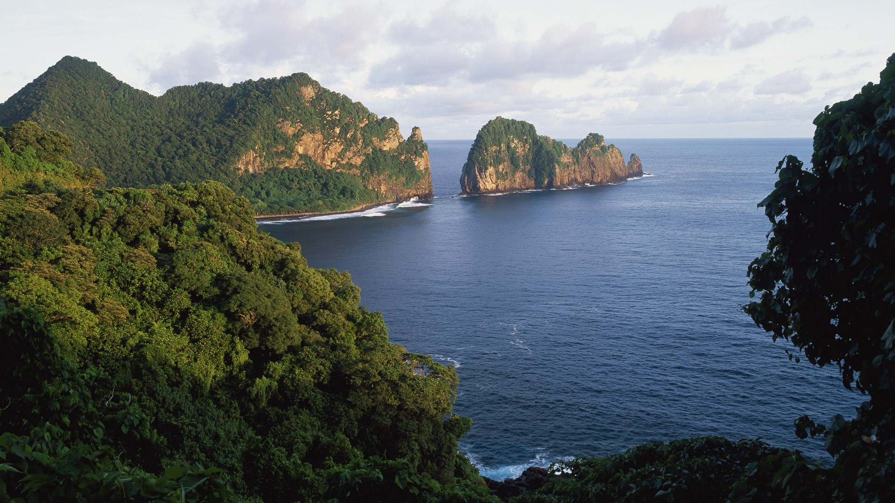

news
Lorell is using a new Experia to take his shots
The main new feature in this year's update is an innovative optical telephoto lens. Essentially, the third camera module offers both 85mm and 125mm telephoto focal lengths, and even better, you can seamlessly zoom back and forth between them.The Xperia 1 IV features triple front-facing Zeiss lenses, including the aforementioned 85-125mm module plus 16mm and 24mm wide-angle focal lengths, all supporting 12 megapixel resolution.
Photo by: Fujifilm X-H2S
The X-H2S has a brand new 26 megapixel, APS-C sized, X-Trans CMOS 5 HS stacked sensor, the latest X-Processor 5 image processing engine, 6K/30p and DCI 4K video recording at up to 120p in 4:2:0 8-bit internally and 4:2.2 10-bit externally via HDMI with longer recording times of up to 240min, and an extended ISO range of 80-51200. More ...

Luminar AI Review
Luminar AI is claimed to be the first image editor which is entirely powered using artificial intelligence. Skylum's previous image editing software, Luminar 4, has been discontinued and replaced with AI, even though it is being pitched as a completely new and different product. More ...